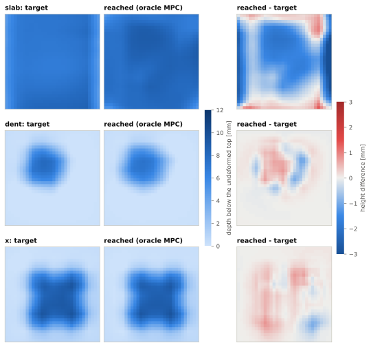
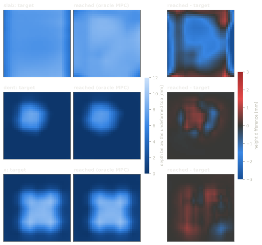
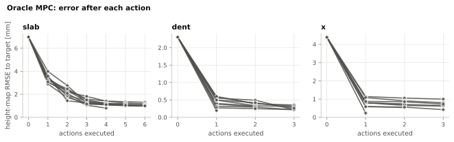
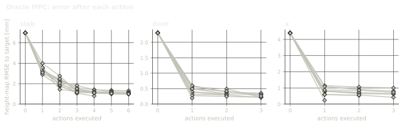

The Oracle
Targets that are known to be reachable
Section titled “Targets that are known to be reachable”Each target is produced by a hidden demonstration: a short scripted sequence run in the simulator from the untouched block. The planner receives the resulting height map and the tool. It never sees the actions.
| target | tool | demonstration | cap on actions | height-map RMSE of the untouched block |
|---|---|---|---|---|
| slab | roller | four parallel passes, 8 mm deep, 100 mm long, 30 mm apart | 6 | 6.97 mm |
| dent | flat press | one press, 11 mm deep, off-centre and turned 20° | 3 | 2.30 mm |
| X | cross stamp | one stamp, 12 mm deep, turned 45° | 3 | 4.39 mm |
Because the demonstration exists, zero error is attainable, and an error can be read on an absolute scale: the last column is the error of doing nothing.
Targets drawn by hand (a pocket with vertical walls, a slab of exactly uniform height) would not have that property. This clay springs back by a third and cannot hold a sharp edge (The Clay), so the best reachable error for such a target would be an unknown positive number, and every planner would be compared against a floor nobody can compute.
The oracle
Section titled “The oracle”Here the rollout model of The Planner is MuJoCo. For each of the 96 candidate actions of a decision, the saved state is loaded into a world of mujoco.batch, the primitive is simulated, and the height map of the resulting shape is compared with the target. Nothing is approximated: the model is the environment, down to the last bit (State, Save and Restore).
This is the most expensive planner in the project and the upper bound for the others: same search, same budget, exact predictions.
Results
Section titled “Results”Ten seeds of the search per target; mean ± standard deviation.
| target | reached: height-map RMSE | share of the initial error left | Chamfer | EMD | actions | simulated primitives for planning | planning time |
|---|---|---|---|---|---|---|---|
| slab | 1.05 ± 0.13 mm | 15.1 ± 1.9 % | 3.10 ± 0.51 mm | 7.66 ± 2.65 mm | 5.7 ± 0.6 | 566 ± 29 | 213 ± 11 s |
| dent | 0.27 ± 0.05 mm | 11.8 ± 2.4 % | 0.29 ± 0.09 mm | 0.34 ± 0.11 mm | 2.6 ± 0.7 | 278 ± 29 | 54 ± 6 s |
| X | 0.65 ± 0.20 mm | 14.7 ± 4.6 % | 0.65 ± 0.17 mm | 0.74 ± 0.21 mm | 2.4 ± 0.8 | 269 ± 38 | 52 ± 7 s |
For scale, the untouched block against the three targets has Chamfer distances of 6.91, 1.38 and 3.26 mm and earth mover’s distances of 11.57, 1.58 and 4.02 mm.
Averaged over targets, 13.9 ± 1.9 % of the initial height-map error is left, at 371 simulated primitives per episode. One decision takes 18 s with the press or the stamp and 36 s with the roller, whose primitive is almost twice as long.




Why an exact model does not reach zero
Section titled “Why an exact model does not reach zero”The demonstration of the dent is a single press 11 mm deep, and the oracle finds it once in ten seeds: seed 9 pressed 11.1 mm deep, 1 mm from the demonstrated position, reached 0.19 mm and correctly stopped. The other nine first presses are 8.7 to 10.2 mm deep (one at 11.0), a few millimetres off in position and often turned. They leave 0.27 to 0.60 mm, and one or two further presses bring the result to 0.22 to 0.35 mm.
The model is exact, so this is entirely the search. With 96 evaluations over four parameters, the best sample is near the optimum and not at it. Then the greedy loop continues from a shape the demonstration never visited, where the remaining error can no longer be removed by one clean press.
The X shows a systematic part of the search error. All ten first stamps are too shallow: 9.3 to 11.7 mm, against 12 mm in the demonstration. The reason is the guided proposal of The Planner. It sets the depth of half the first population so that the tool bottom lands on the target surface, which would be right for a material that keeps the whole stroke. This clay gives back about a third (The Clay), so a dent that ends 8 mm deep needs a 12 mm stroke, and three iterations of the search only move part of the way from where the proposal started. A stamp that is too shallow cannot be fixed by stamping again in the same place without reproducing the error elsewhere, so the X ends at 0.65 mm, worse than the dent, although it is also a single action.
Scaling the proposed depth by the spring-back, a factor of about 1.5, would remove most of this bias. It was not done, because by the time it was found every planner in parts VI and VII used this proposal, and they are compared with each other at a fixed search.
The slab adds a third effect, visible as the blue centre of its difference map: the block is too low there. The first greedy pass goes as deep as the tool is allowed, or nearly (10.9 to 14 mm, against 8 mm in the demonstration), because that removes the most error in one action, and clay that has been pressed too far cannot be raised again. A planner that looked two actions ahead would not make that trade. Planning with Learned Models shows a model that avoids it by being wrong.
A larger population would close most of the random part of this gap at a proportional cost. The budget was kept at 96 because the point of the oracle here is to be a fixed reference for the learned planners, which are given the same 96.
What the height map does not see
Section titled “What the height map does not see”For the dent and the X, Chamfer and EMD tell the same story as the height map. For the slab they do not. The height-map error falls to 15 % of its initial value, but the earth mover’s distance only falls from 11.6 mm to 7.7 mm, with a spread across seeds of 2.7 mm (from 2.4 to 10.8 mm).
The slab is the target where material moves sideways by more than a centimetre (The Clay). The demonstration rolls four parallel passes in one direction. The planner rolls five or six passes in assorted directions: its first pass is nearly always a deep, long roll across the middle of the block, at a different yaw in every seed. The top surface ends up at nearly the right heights, with its material in different places and its side walls bulged differently. The height map cannot tell, and the planner was told to minimise the height map.
This is a property of the cost, not of the oracle, and it is inherited by every planner in the following parts. It is one of the limits listed in Limits.